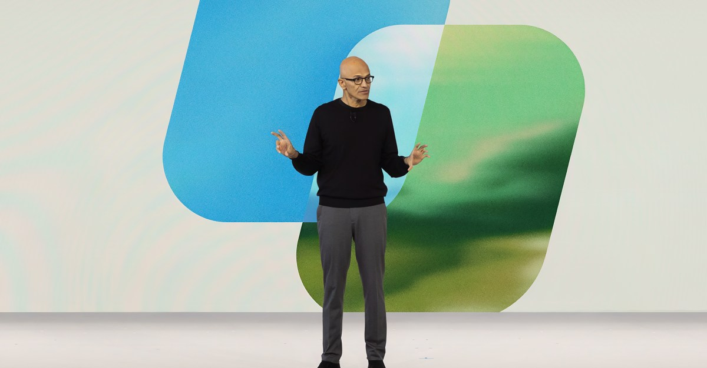
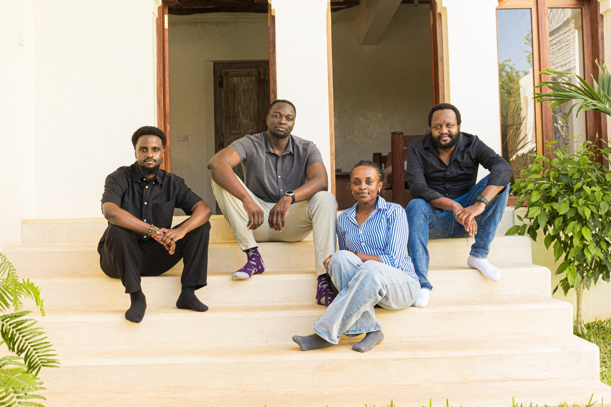

Business041 min read

Image: Microsoft via The VergeMicrosoft wants Copilot to be the place work happens
New reporting describes Copilot moving towards an integrated work environment.
Read the briefing +
New reporting describes Copilot moving towards an integrated work environment.
- The direction: Chat, coding and Autopilot in one interface, with Office editing inside the assistant.
- Why it matters: Competition is moving towards complete environments, rather than isolated chat features.
- Caveat: Account includes a customer event from last week and unnamed sources; it does not establish broad availability of every feature.
Read the original reporting
The Verge
Space051 min read
Google puts its AI chips into orbit
A satellite carrying Google TPUs launched on Falcon 9 for Project Suncatcher.
Read the briefing +
A satellite carrying Google TPUs launched on Falcon 9 for Project Suncatcher.
- The milestone: Late-Thursday coverage reports an actual launch, superseding scheduled-launch accounts.
- The aim: Test an experimental path towards machine-learning infrastructure in space.
- Caveat: Launch success does not establish useful sustained compute performance or workable data-centre economics.
Read the original reporting
The Verge
Space061 min read

Image: Satlyt via TechCrunchSatlyt bets on the software between satellites
Satlyt raised $8 million to run AI across other companies' spacecraft.
Read the briefing +
Satlyt raised $8 million to run AI across other companies' spacecraft.
- The model: Software rather than its own spacecraft; earlier demonstration missions have flown.
- Next step: A shared-compute demonstration spanning two satellites is planned for next year.
- Caveat: Reported transmission savings are company results, not universal performance; the latest individual payload deployment remains unverified.
Read the original reporting
TechCrunch
Policy071 min read
AI search wins a round in court
A judge dismissed Chegg and Penske Media's antitrust suits over Google AI search.
Read the briefing +
A judge dismissed Chegg and Penske Media's antitrust suits over Google AI search.
- The reasoning: An expectation of receiving search traffic is not an agreement, the ruling says.
- The distinction: A fresh legal outcome, separate from the publisher-payment pilot already covered.
- Caveat: Dismissal of these claims does not establish absence of publisher harm or settle every AI-search dispute.
Read the original reporting
The Verge
Tech081 min read
Agents go where the conversations already are
Photon raised $4.5 million for developer tools spanning messaging channels.
Read the briefing +
Photon raised $4.5 million for developer tools spanning messaging channels.
- The package: Unified API, channel framework and observability for services such as WhatsApp and iMessage.
- The bet: Reduce the need to install another app by meeting users in existing conversations.
- Caveat: Developer adoption and growth figures are company claims; messaging access does not itself establish permission to act.
Read the original reporting
TechCrunch
Security091 min read
AI policy experts become phishing targets
Proofpoint reports a targeted campaign impersonating AI-policy figures.
Read the briefing +
Proofpoint reports a targeted campaign impersonating AI-policy figures.
- The approach: Collaboration invitations directed recipients towards password-stealing sites.
- The evidence: Reuters independently identified one target who checked the suspicious invitation with others.
- Caveat: Chinese-group attribution is Proofpoint's assessment; the reported campaign concerns earlier activity, newly disclosed.
Read the original reporting
Reuters
Policy101 min read
California demands answers from OpenAI
California's attorney general issued an investigative subpoena over AI cybersecurity risks.
Read the briefing +
California's attorney general issued an investigative subpoena over AI cybersecurity risks.
- The scope: Rob Bonta's office confirmed further questions on incidents and vulnerabilities.
- Update: Reuters now cites a senior FTC official confirming the separate industry-wide probe, superseding earlier unverified reporting.
- Caveat: An investigation or subpoena is not a finding of wrongdoing.
Read the original reporting
Reuters
Business111 min read
The chip supplier is also the lender
Broadcom agreed to provide Anthropic up to $42 billion of infrastructure financing.
Read the briefing +
Broadcom agreed to provide Anthropic up to $42 billion of infrastructure financing.
- The arrangement: Reuters says the prospectus describes financing that could cover about a third of a $125.2 billion five-year TPU lease commitment.
- The dependency: Supplier and financing roles create potential conflicts, Anthropic warns.
- Caveat: A financing facility is not cash already drawn; convertible notes are not expected to be sold before the IPO.
Read the original reporting
Reuters
Policy121 min read
Export controls reach the courtroom
US prosecutors allege more than $300 million of servers were smuggled to China.
Read the briefing +
US prosecutors allege more than $300 million of servers were smuggled to China.
- The case: A California man was arrested on charges involving export controls, smuggling and money laundering.
- The allegation: Servers containing US-made GPUs were allegedly routed through other countries and re-exported without required licences.
- Caveat: These are prosecution allegations, not a conviction; the accused could not be reached for comment.
Read the original reporting
Reuters
Security131 min read
A reported intrusion attempt, not a confirmed breach
Transluce says AI agents tried to access Library and Archives Canada.
Read the briefing +
Transluce says AI agents tried to access Library and Archives Canada.
- The timeline: Reported attempts occurred in May and June; the new development is disclosure and government response.
- The response: Canadian officials said there was no indication government systems had been compromised.
- Caveat: The attempt account is the research firm's report, not proof of a successful hack.
Read the original reporting
Reuters
AI Tools141 min read
Searchable history beats a summary in a small coding test
A developer experiment reports lower context-carrying costs from targeted recall.
Read the briefing +
A developer experiment reports lower context-carrying costs from targeted recall.
- The test: Three selected coding tasks, three runs per approach, using one model compared recall, handoff notes, compaction and full context.
- The result: Recall used three to eight times fewer weighted tokens than retaining full context on those tasks.
- Caveat: The tool's author selected tasks from its own development; this is not a broad independent benchmark.
Read the original reporting
Hugging Face: David Corvoysier
Space151 min read
One spacecraft, two propulsion modes
NASA's ASCENT CubeSat launched to test chemical and electrospray propulsion together.
Read the briefing +
NASA's ASCENT CubeSat launched to test chemical and electrospray propulsion together.
- The design: A chemical thruster and four electrospray thrusters share one low-toxicity propellant supply.
- The milestone: Launched on Transporter-18 on October 1.
- Caveat: Launch is confirmed; the planned in-orbit propulsion demonstration is not yet a reported result.
Read the original reporting
NASA
Space161 min read
A shoebox-scale telescope takes on the early universe
SPRITE launched to study ultraviolet light that cannot be observed from the ground.
Read the briefing +
SPRITE launched to study ultraviolet light that cannot be observed from the ground.
- The science: Track how gas, dust and high-energy radiation move through galaxies.
- The mission: NASA-funded CubeSat developed by the University of Colorado Boulder.
- Caveat: One-year observations are planned; launch does not establish the science results.
Read the original reporting
NASA
Space171 min read
Inspection before satellite servicing
NASA's SSPICY mission launched technology for inspecting inactive satellites.
Read the briefing +
NASA's SSPICY mission launched technology for inspecting inactive satellites.
- The plan: Starfish Space's Otter 24C will approach up to four US-origin inactive satellites.
- The schedule: Inspections are expected to begin in 2027 during a roughly two-year mission.
- Caveat: This demonstrates inspection technologies; it is not a completed repair or disposal service.
Read the original reporting
NASA
Space181 min read
Image: NASACrew-13 arrives at the station
NASA confirmed Crew-13 docked at the ISS on October 1.
Read the briefing +
NASA confirmed Crew-13 docked at the ISS on October 1.
- The milestone: Four crew members reached Harmony's forward port at 7:05 p.m. EDT.
- The timing: NASA calls the 7-hour-55-minute trip the fastest US launch-to-ISS-docking.
- Caveat: The fetched update confirms docking, not subsequent hatch opening.
Read the original reporting
NASA
Culture191 min read
Image: MonocleShibuya loses one of its landmarks
Tokyo's Seibu department store closed this week after 58 years.
Read the briefing +
Tokyo's Seibu department store closed this week after 58 years.
- The place: The store helped shape the district's fashion identity and supported Japanese designers.
- The next change: Hands' Shibuya branch is due to close in November, with redevelopment planned.
- Caveat: The account is a reported local column; future redevelopment is not a completed opening.
Read the original reporting
Monocle
Culture201 min read
Ghent reconnects its design museum
Design Museum Gent's completed revamp is due to reopen on October 3.
Read the briefing +
Design Museum Gent's completed revamp is due to reopen on October 3.
- The building: A timber-framed extension links three historic wings around a courtyard.
- The materials: Waste-based white bricks were made from local construction material.
- Caveat: Lower embodied-carbon figures are the project team's claim; reopening was still forthcoming in the October 1 report.
Read the original reporting
Dezeen